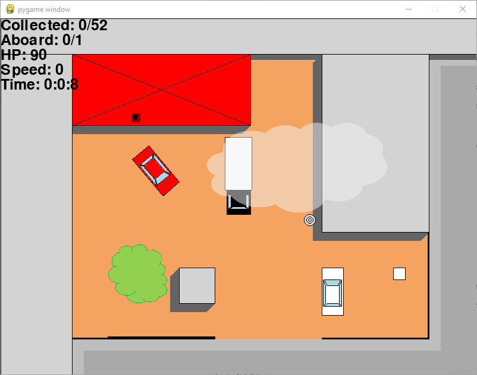
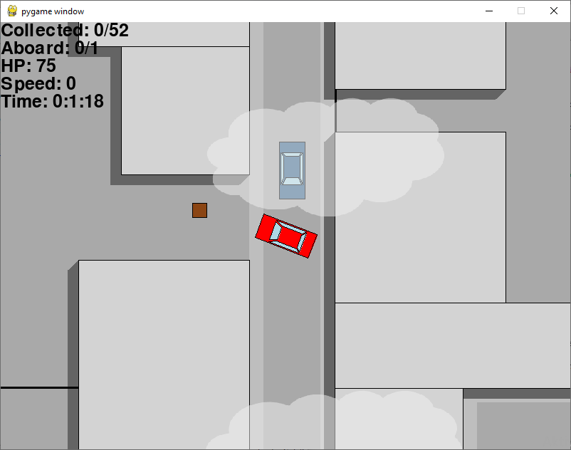

GTA 2D
Description
The inspiration was the first Grand Theft Auto game, it was on of my favourites when I was a kid. I wanted to develop some game, and this was interesting and hard enough to try.
I started with drawing a street and a car (everything made of rectangles) in order to test the movement and the collision. I used tkinter for the graphics. This was hard enough, then I found out about pygame. This module was really helpful because it does everything that I couldn't develop, so I had to focus only on design.
In the game you control a car (a sedan or a truck) and your mission is to collect the (brown) boxes that are scattered througout the map and return them to the site. You start at the site. There is a display at the top left of the screen, it shows your total number of boxes collected, number of boxes in the car, health, speed, time passed. The car is controlled with the arrow buttons. Picking up simply means to collide with the box. With a box onboard you have to return to the site and unload it by pressing U. Here you can change car (sedan or truck, truck is slower but can carry more boxes) by pressing C. You lose health when you collide with buildings and other cars. Health can be recovered by picking up health boxes (white). By pressing R you can start the radio, and using this button you can skip to another song. Pressing M opens the map, the red dot marks you. You can navigate on the map with the arrow buttons. By pressing the numbers 1, 2, 3, you can mark your place on the map with a yellow dot.
Source
To do
- map design, modification and handling are too hard
- better sound effects (pickung up box, etc)
- radion randomization: not the last track again
- traffic should turn back at street end, not disappear; when two cars meet, they should turn back or jump over randomly
- music: create a folder where the user can put his own music